WORK ORDER 07 · OBJECTIVE COLOURS
THE BASES IN THE REGOLITH INKS
The objectives and their outbuildings are drawn in saturated sci-fi colours that are not in the palette, and nearly every one of them is a seat colour: the cubes that sit in the sockets have to compete with the buildings round them. Three ways to bring them into the scheme, each shown on the game’s own tiles.
THE REGOLITH PALETTE (DIRECTION BOARD)
THE SEAT COLOURS THEY COLLIDE WITH
7Habitat
8Refinery
9Ice Mine
10Reactor
0Sinkhole
The bases as the game draws them: emerald, neon green, violet, pink, royal blue, gold and red on cool blue-grey metal. None of these hues is in the palette, and most of them are a seat colour.
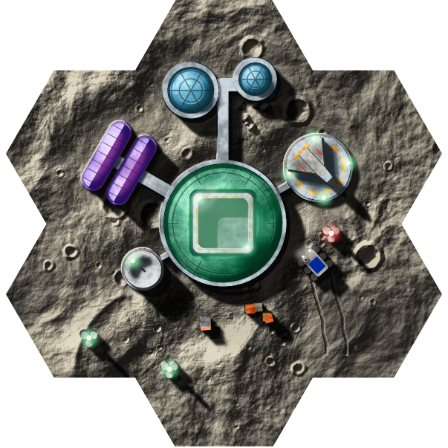
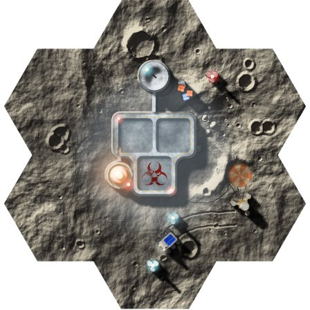
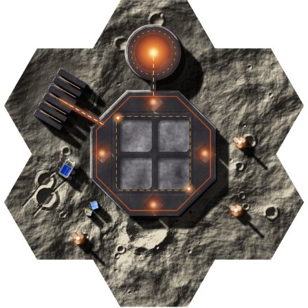
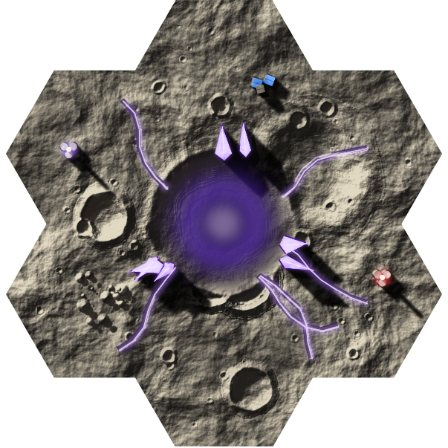
The field bulletin’s inks. Every yellow becomes Hazard, every other colour Oxide and Union; metal goes from cool blue-grey to warm bone.
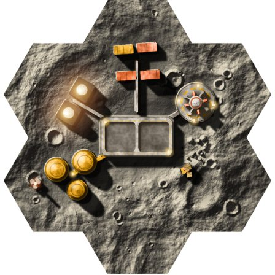
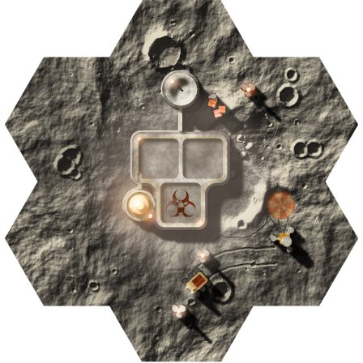
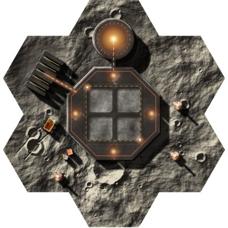
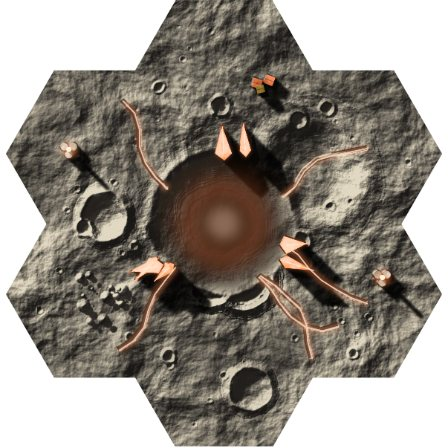
For. The most printed: the tiles read like the World board, the cards and a settlement poster.
Against. Every site is orange, so the number is told by shape alone; orange sits between the Zhong red and Merika amber cubes.
The inks of the Seven tiles, lit surface board. Cool things (domes, ice, coolant, panels) in Teal, hot things (reactor, flares, warnings) in Rust, markings in Hazard.
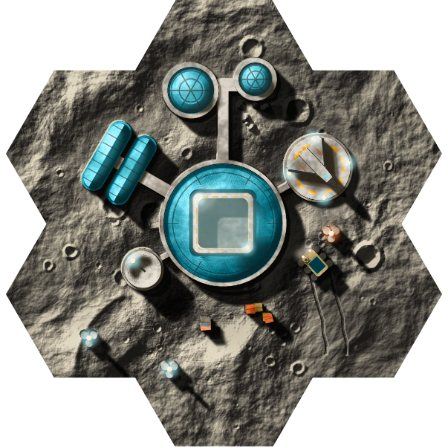
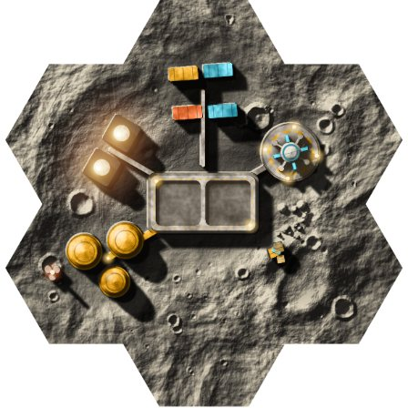
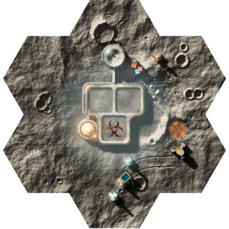
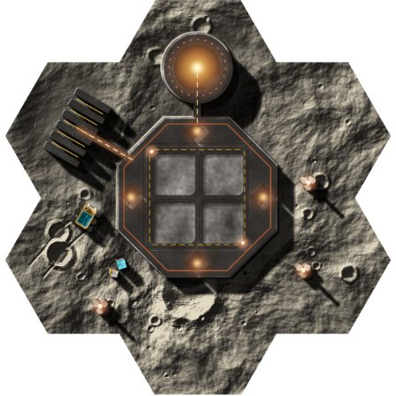
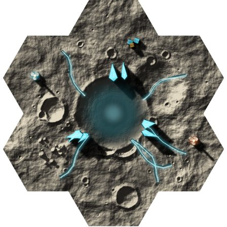
For. Two temperatures tell cold sites from hot ones at a glance, and it matches the survey board.
Against. Teal is still loud beside Yuropa blue cubes, and the Habitat and Ice Mine come out the same colour.
C BONE AND ONE SIGNAL
RECOMMENDED
Every structure in the Regolith, Dust and bone neutrals. Each objective keeps one muted signal ink: 7 Jupiter, 8 Hazard, 9 Compact, 10 Union, the Sinkhole ejecta ice. Hazard markings stay Hazard.
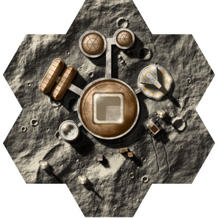
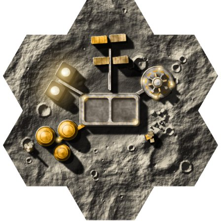
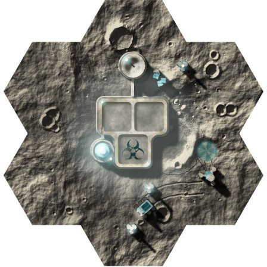
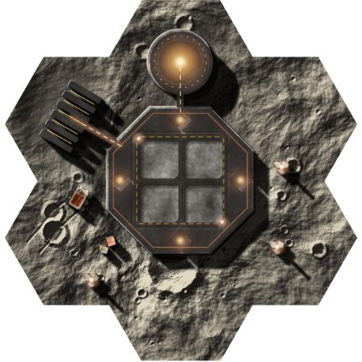
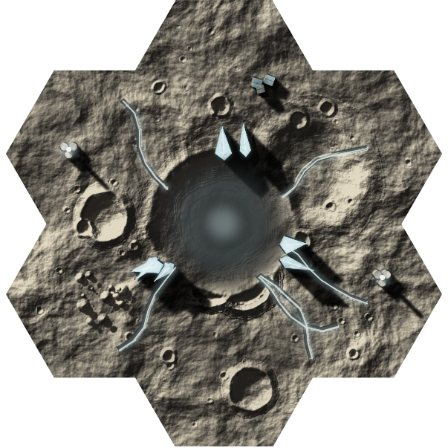
For. The seat cubes in the sockets become the loudest thing on the tile. Each number keeps a colour of its own, and worn bone metal fits make do.
Against. The least colour of the three; the glows lose their punch, and 7 and 8 are both warm.
ON MARS
On Mars the neon and violet fight the oxide ground as well as the seats.
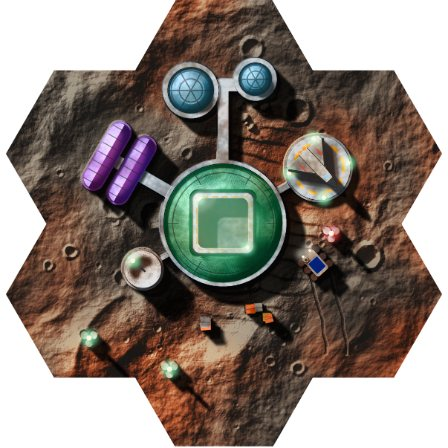
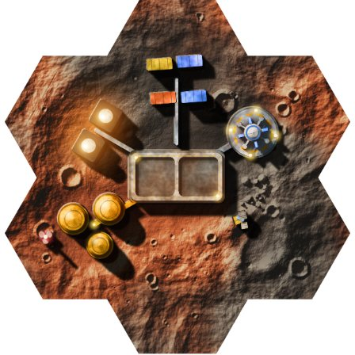
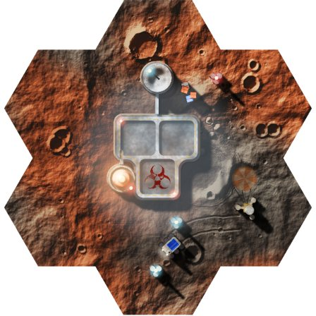
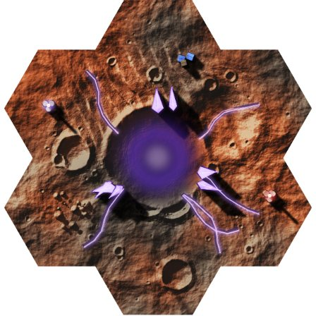
Teal holds up against the red ground; rust parts sink into it.
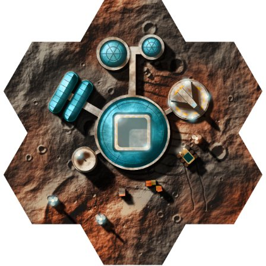
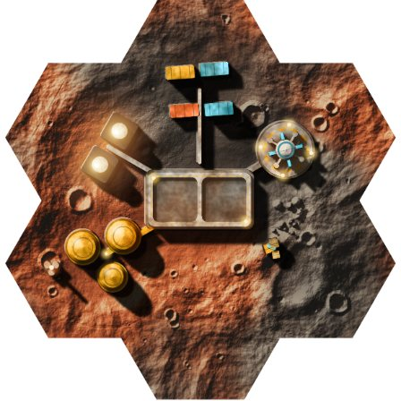
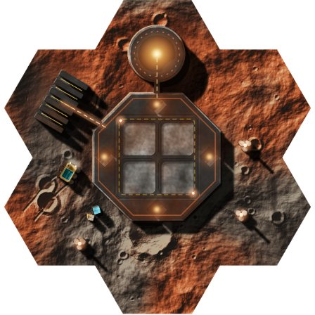
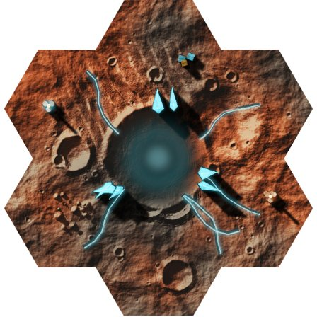
Bone metal stands clear of the oxide ground; the Reactor’s Union glow is the one ink that sinks.
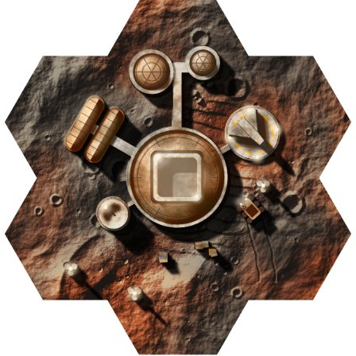
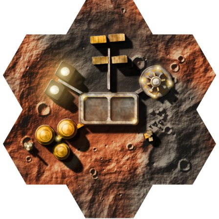
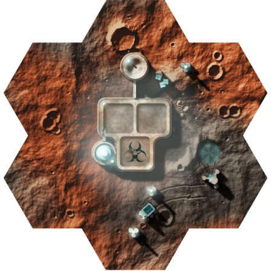
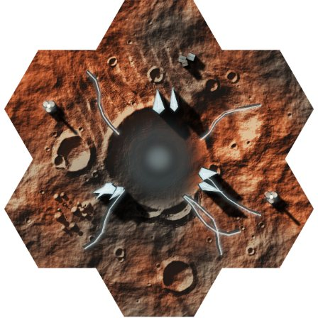
Each tile is the game’s own render (packages/art regolith/base.ts, buildings.ts, craft.ts), printed in Chrome with every building colour remapped by lightness onto the option’s inks; the ground is untouched, and greys go to the bone ramp in every option. Made for real, the colours would be picked by hand in those files, into one ink table in parts.ts.